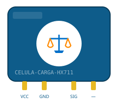
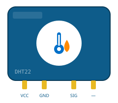
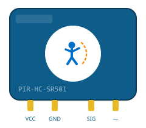
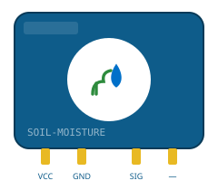
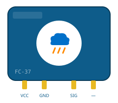
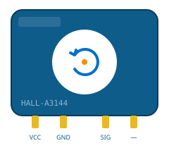
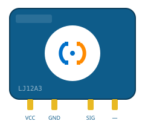
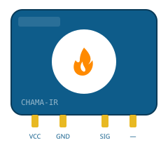
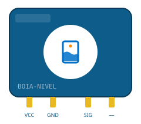
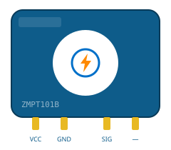

Catálogo de Sensores IoT e Industriais
Catálogo técnico com 25 sensores utilizados em projetos de Internet das Coisas e Automação Industrial com Arduino, ESP32, Raspberry Pi e CLPs. Use a busca ou os filtros por categoria para encontrar o sensor ideal para o seu projeto.
Cada sensor conta com página própria trazendo conceito, princípio de funcionamento, especificações técnicas, tipo de sinal, aplicações, exemplo de uso e fabricantes/modelos comerciais.
Mostrando 25 de 25 sensores

ACS712
Ver sensor
BH1750
Ver sensor
Célula de Carga + HX711
Ver sensor
DHT11
Ver sensor
DHT22 (AM2302)
Ver sensor
DS18B20
Ver sensor
Encoder Incremental KY-040
Ver sensor
HC-SR04
Ver sensor
KY-037
Ver sensor
LDR
Ver sensor
LM35
Ver sensor
MFRC522 (RFID)
Ver sensor
MQ-135
Ver sensor
MQ-2
Ver sensor
PIR HC-SR501
Ver sensor
SW-420
Ver sensor
Sensor Capacitivo LJ18A3
Ver sensor
Sensor Capacitivo de Umidade do Solo
Ver sensor
Sensor FC-37 (Chuva)
Ver sensor
Sensor Hall A3144
Ver sensor
Sensor Indutivo LJ12A3
Ver sensor
Sensor de Chama IR
Ver sensor
Sensor de Nível (Boia)
Ver sensor
YF-S201
Ver sensor
ZMPT101B
Ver sensorNenhum sensor encontrado para essa busca/filtro.